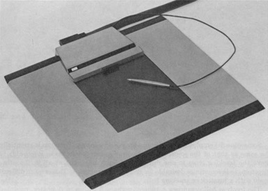
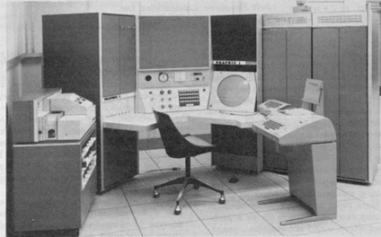
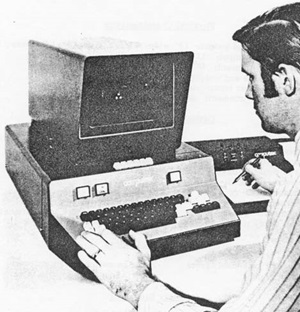
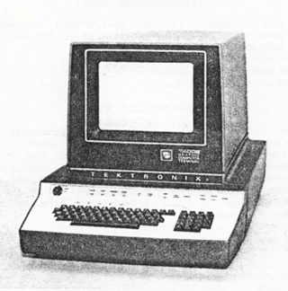
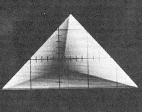
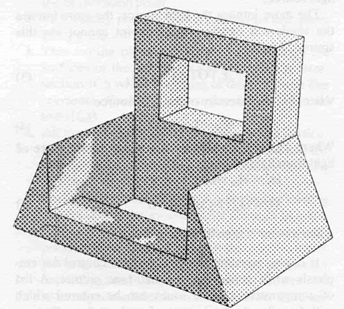
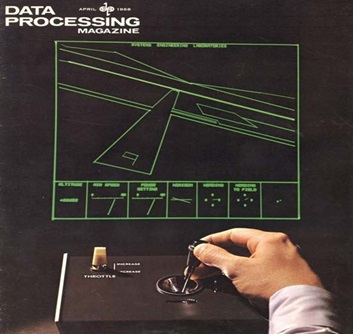
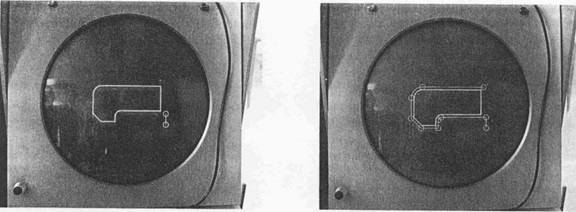
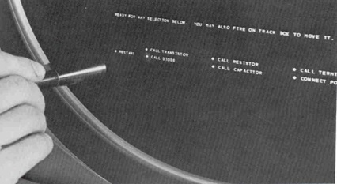
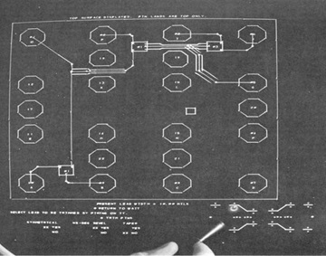

第4章：20世纪60年代中后期的研究
尽管在20世纪60年代早期，出现了第一个实验性CAD系统，例如萨瑟兰的Sketchpad、Itek的电子绘图机和通用汽车DAC-1，但这十年的后半段出现了一波研究活动，为最终将这项技术商业化奠定了基础。显然，萨瑟兰使用的TX-2等专用大型计算机不适用于商业系统。同样，由于当时可用计算机的处理能力有限，许多图形处理需要卸载到显示终端本身以及用于刷新显示图像的内存中。这一时期见证了三个重要设备的发展，最终推动了商业CAD系统的推出 - 存储管显示器、小型计算机和平板电脑。
平板电脑作为光笔替代品的发展
随着对计算机图形学的兴趣不断增长，人们开始对开发低成本图形输入设备以替代光笔产生了兴趣。后者的设备比较昂贵，并需要用户在工作时保持手臂举起。虽然光笔有直接选择显示项目的优点，但许多研究人员认为这是一种笨拙的工作方式，并开始寻找替代技术，尤其是可能更便宜的技术。

最早的间接指向设备之一是由位于加利福尼亚州圣莫尼卡的RAND公司在1964年开发的RAND平板电脑，该公司在华盛顿的国防部高级研究计划署的合同下工作。该设备具有10.24英寸×10.24英寸的活动表面，分辨率为每英寸100条线。该平板电脑实际上是一个大型电路板，其中一个方向上有X轴分辨率线，另一个方向上有Y轴线。当用户在平板电脑的表面上移动触笔时，计算机控制的图形显示设备会感知到在X和Y方向上的位置并反馈给计算机。
起初，平板电脑提供了一个低成本的替代光笔的选择，但最终，它们在存储管显示器问世后被证明是非常有价值的，因为光笔无法与存储管显示器一起使用。最初，RAND只是向其他研究机构提供其平板电脑的副本，但最终它被RAND和其他公司商业化。
此外，麻省理工学院的林肯实验室也正在进行其他开发工作，其中Larry Roberts创建了一种实验性的指向设备，可以在三维空间中使用四个超声波传感器工作。虽然这项技术是可行的，但这个概念从未真正得到用户的青睐，很少有三维指向设备被制造。
在同一时期，林肯实验室开发的另一种设备是一个硬件比较器，可以接收从平板设备输入的X/Y坐标位置，并确定被指向的图形元素，而不需要应用程序检查整个数据库以寻找最接近该位置的显示元素。它通过记录所指向位置的坐标值，然后确定是否有任何显示的矢量或点穿过该位置来实现这一点。（我假设它利用了特定坐标值周围的一个小区域），当它找到匹配项时，引发硬件中断，以便可以识别被指向的显示项。
根据罗伯茨的说法，“对于中央显示生成器的比较器硬件来说，位置指向设备比光笔更可取，因为无需跟踪它们，指向更精确，并且它们可以与长持久荧光物质一起使用。”[3]随着存储管显示终端开始出现，寻找光笔替代品成为了一个重要问题，而平板电脑似乎提供了这个替代品。随着低成本高计算能力的计算机越来越普及，识别显示图形元素的硬件比较器的需求逐渐消失。因此，基于硬件的图形比较器从未成为商业CAD系统的关键组成部分。
与平板电脑相关的一个问题是，它们需要大量的计算机处理来跟踪笔尖的移动并将手部动作转换为主机计算机可以理解的图形输入。随着时间共享的出现，主机计算机同时被多个用户使用，而资源不足以支持大量装备有平板电脑的图形终端。
加利福尼亚州圣莫尼卡的政府承包商System Development Corporation通过在图形终端和主机时间共享计算机之间放置数字PDP-1来解决这个问题。PDP-1负责跟踪笔尖的移动，并在用户启动或完成笔尖移动（例如定义线的起点或终点）时向运行在主机上的应用程序提供数据。笔的移动每秒被PDP-1采样250或500次。在更高的速率下，平板电脑支持占用了PDP-1计算能力的约30％。
虽然Rand平板电脑使用了细线网格（每英寸1,000 x 1,000或约100个），通过网格流动信号，但也推广了其他技术。西尔维尼亚电子系统推出了Sylvania Data Tablet Model DT-1，它使用模拟技术来确定笔尖位置。Sylvania单元还可以提供大约高度的粗略测量，以及其他一些有趣的功能，例如透明，因此可以将平板电脑放在CRT屏幕上方。DT-1还使用笔作为其笔尖，使用户可以创建正在绘制的信息的硬拷贝。虽然这些都是有趣的功能，但用户对它们不感兴趣，或者不愿意为这些功能花费额外的费用，因此这个设备从未流行起来。
平板电脑相对于光笔的优势之一是，当笔尖放在CRT表面上时，它物理上阻挡了操作员指向的内容。为了解决这个限制，许多软件程序使用“伪点”的概念，即显示的光标略微偏离操作员指向的确切位置。通常，伪点会略高于光笔的实际位置。应用软件将解释伪点表示操作员实际感兴趣的坐标，无论是选择现有元素还是在屏幕上定义新点。
1966年《华尔街日报》文章
CAD行业历史上一直存在的一个主要问题是公众对这种技术所能实现和对设计和制造生产力所产生的积极影响缺乏认可。在1966年10月25日的《华尔街日报》上，少数几篇有关CAD的早期文章之一出现了。这篇头版文章的标题是“工程师通过电脑视觉设计，聚焦屏幕上的光线。”
作者斯科特·R·舒门达尔写道：“喜欢使用草图解决难题的科学家和工程师可以放弃传统的粉笔和铅笔等工具。计算机技术的一项重大进步开始为他们提供一种全新的工具——与计算机连接的类似电视屏幕，可以使用光束进行草图绘制。”[6] 舒门达尔在文章中广泛使用汽车设计比喻，这在计算机技术的整体新颖性，更不用说交互式图形方面，尤为出色。文章描述了如何创建、编辑和旋转不同视角的汽车草图，这一过程非常简单。
文章的很大一部分讨论了这些图形系统未来预期的能力，即创建NC机床的控制带。 “……快速到来的那一天，计算机将能够分析屏幕上的齿轮图纸，并自动输出描述如何制造零件的编码带。”[7] 当时，零件编程仍是一个极其耗时的过程，通常是手动完成的。作者引用了当时担任洛克希德-乔治亚州计算机图形研究主管的S·H·(追逐)查森的话，描述了该公司NC开发的当前状态。
洛克希德在前年11月生成了实验性的NC带，并计划在1966年底之前为C5A飞机生产零件。查森将这种应用的预期收益与C141飞机建造时使用的技术进行了比较，当时每个使用NC机床生产的1,500个零件需要平均60小时来准备每个控制带。查森说：“我们最初的估计是计算机图形将把这个平均值降低到约10个小时，但现在我们认为节省的时间可能会更多。”[8] 下面将更详细地描述洛克希德的这项工作。
该文章列出了一些应用计算机图形技术于工程设计的公司，包括IBM、控制数据公司、邦克拉莫公司、通用电气、Sperry Rand、信息显示和科学数据系统。文章对通用汽车公司的图形活动描述有些模糊，而对IBM在这方面的工作则更加详细。IBM在1964年4月将2250图形终端作为System/360外围设备推出。到《华尔街日报》发表该文章时，公司已经交付了“数十”台机器，并且已经收到了“数百”个客户的订单，其中大约一半是工业用户和国防航空用户。IBM完全有可能是说它有数百个额外的机器订单，而不是数百个客户订单。报道称，IBM还推出了售价为76,800美元的2250改进版。
Schmendal将计算机图形作为一种工程设计工具的兴趣，归功于伊万·萨瑟兰。萨瑟兰在完成他的Sketchpad工作并于1963年获得电气工程博士学位后，担任国防部高级研究计划局信息处理技术主任，随后在1966年担任哈佛大学教授。文章的最后一部分预测，分时共享将对降低使用计算机图形的成本产生重大影响。
该文章中比较有趣的一个方面是，Schmendal引用了Adams Associates在马萨诸塞州剑桥市进行的一项图形调查，该调查称：“CRT（阴极射线管）显示设备的使用将大幅增加。”这项调查很可能是该公司后来出版的定期报告《计算机显示评论》的前身，我最初参与了该报告的制作，并亲自撰写了关于显示技术的部分。
计算机图形学的发展
20世纪60年代后期，计算机图形设备取得了重大进展，包括线条刷新显示器和储存管显示器。由于成本相对较低，点阵刷新设备仍在使用，但它们正在逐渐失宠，因为它们无法产生工程设计工作或类似应用所需的高质量图像。
储存管显示器将在本章后面讨论。
刷新显示设备面临的一个主要问题是，为了避免图像闪烁，CRT屏幕上的图像必须每秒重绘或刷新30次或更多次。最初，这是通过让主机计算机将数据逐个向显示设备输送来实现的。在某些情况下，这是通过从描述数据的数据文件中不断重新生成矢量信息来完成的。计算机将确定要显示多少图像，并裁剪任何落在视图区域之外的矢量。这种操作占用了主机计算机相当大的计算能力。
为了解决这个问题并使主机计算机能够同时支持多个显示设备，一种方法是尽可能地将这项工作从计算机转移到终端。使用的技术是将显示终端配备自己的存储器和类似计算机的处理器，该处理器将存储要显示的数据并不断地在CRT上重新生成图像。称为“显示列表”，这个想法已经存在了几年，不是特别新颖。
显示处理器从显示列表中存储的数据不断重新生成显示的图像，而不会在主机计算机上产生任何计算要求。有创意的是为这些显示处理器提供子程序功能。即使显示列表只包含定义符号的图形元素的单个副本，也可以显示多个符号的多个副本。显示处理器会将该单个副本视为子程序，就像程序员在主机计算机程序中一样。
学术研究中心、商业公司和政府实验室都在致力于开发显示列表处理器。国家标准局早期的一个项目称为“MAGIC - 一种自动图形界面计算机”，这篇文章由D.E.Rippy和D.E.Humphries撰写，发表在1965年秋季联合计算机会议的论文中。开发此类设备的关键问题是建立硬件和软件功能之间的适当平衡。
逐渐地，显示设备承担了越来越多生成显示图像所需的任务。这包括添加诸如裁剪掉落在CRT屏幕之外的图像部分、圆形和弧形生成器以及字符生成器等功能。与其让主机计算机上的软件定义不同线条样式（短划线、长划线、暗淡、亮等）的各个元素，每个元素可在显示列表中编码为线条类型，显示处理器将相应地创建图像。
另一组致力于开发一种图形终端，该终端将对主机计算机施加名义计算负载的团队是位于新泽西州默里希尔的贝尔电话实验室。他们在1965年组合的系统名为GRAPHIC 1，由数字PDP-5微型计算机和数字Type 340 Precision Incremental Display组成，如图4.2所示。PDP-5是一台12位机器，具有4,096个字的存储器和18微秒的加法时间，但没有硬件乘除能力。它确实具有非常灵活的输入/输出功能。340使用了增量点显示方法，这显著限制了图像的复杂性。

根据William Ninke的说法，可以在每秒30帧的无闪烁状态下显示大约200英寸的线条绘制或1,000个字符。一旦将图像传输到GRAPHIC 1，它就存储在PDP-5的存储器中，并且图像将继续刷新，而主机计算机不需要再采取任何行动。与这个研究系统连接的各种输入设备包括光笔、键盘、切换开关、电位器和二维轨迹球。为了对显示的图像进行更改，需要访问大型机器上的应用程序。在贝尔实验室，主机计算机是面向批处理的IBM 7094，提供每两到六分钟的时间间隔访问Graphic 1。这不利于实时应用程序，这也表明了需要商业大型机系统可以以更交互式的时间共享模式运行。
贝尔实验室的研究人员关注的一个主题是使用光笔与最近开发的Rand平板电脑相比的相对优势。主要的权衡是光笔能够识别显示的对象，而需要搜索图形数据库以找到用平板电脑间接指向的项目。
Ninke表示，他们发现光笔比平板更受欢迎。GRAPHIC 1系统可能有两个特点导致了这个结论。首先，PDP-5并不是一台特别快速的计算机，没有硬件乘除能力，使用平板笔找到用户指向的项目会非常耗时。其次，GRAPHIC 1屏幕可以显示的信息量非常有限，使得光笔更容易区分显示的元素。如果作为控制台配置的一部分使用了更快的计算机和/或具有更大图像容量的显示器，则这两种设备的相对优点可能会有不同的感受。
在两年内，贝尔实验室在开发交互式图形工具方面取得了实质性的进展。IBM 7094被GE 645大型计算机取代，该计算机专门设计用于支持时间共享软件和多个远程设备。645的内存为256K 36位字，速度约为7094的两倍。两种类型的图形终端连接到了645。一套称为GLANCE系统的终端，为时间共享用户提供只读图形，其主要数据输入设备为电传打字机终端。对我们的故事更感兴趣的是一个名为GRAPHIC 2的新交互式终端。使用GRAPHIC 1的PDP-5被Digital PDP-9取代，后者的速度几乎是前者的一个数量级，而价格相对便宜。然而，使用了相同的基本架构。图形文件通过201 Dataphone调制解调器以每秒2,000比特的速度从主机645计算机下载，存储在PDP-9核心内存中，然后用于刷新CRT显示器。交互继续使用光笔。
根据Carl Christensen和Elliott Pinson在1967年秋季联合计算机会议上提交的一篇论文，新设备的响应时间以秒为单位，而GRAPHIC 1需要几分钟。在这段时间内，贝尔实验室开发的软件大多提供基本的数据管理和图形服务，但没有达到可以用于交互式工程设计的完整应用程序。
其他研究组正在寻找减少在时间共享环境中使用的远程图形终端必须传输的数据量的方法。由于20世纪60年代通信线路的速度通常低至每秒300比特，如果必须逐点或作为短向量系列发送图像到远程终端，这可能需要非常长的时间。随着图形应用程序越来越频繁地处理曲线以及存储管显示器需要在移动或删除图形项时重新绘制整个图像，这成为了越来越严重的问题。麻省理工学院的Project MAC开发了一个原型系统，将传输曲线实体所需的数据量减少到每行仅几个字符。
IBM在纽约州金斯敦的设施上也在独立和远程图形终端的开发工作中有所进展。该公司将其2250 Model 4显示器与IBM 1130计算机进行了接口连接。2250最初是作为IBM System/360外围设备推出的，仅在偶尔的情况下与其他计算机一起使用。1130在1965年取代了IBM 1620，是一种流行的工程应用机器。按照20世纪60年代后期的标准，它的速度并不特别快，加法时间仅为8微秒。在同一价格范围内销售的数字PDP-9则快了近四倍。
IBM人员对1130进行了几项修改以支持2250显示器，并创建了支持交互操作的软件。该系统的一个关键特征是，实际的2250显示器命令存储在1130核心存储器中，并使用循环窃取方法传输到显示器上。实际上，当显示器需要下一个命令时，其向计算机请求该数据的请求优先于所有其他计算机操作，但它以完全透明的方法完成。以每秒40帧的速度，该系统可以在该单位的21英寸显示器上显示相当于约2100英寸的线条图。
似乎1130-based系统的主要目的是作为在IBM System/360主机上运行的工程程序的图形界面。该单位能够以每秒约150个字符至每秒30,000个字符的速度与主机计算机通信。后者是那个时代非常高的数据传输速率，可能对大多数工程设计组织来说在经济上不可行。我没有找到任何记录表明IBM曾经为1130和2250的组合开发商业CAD软件，也没有发现该公司积极销售这种类型的配置以供他人开发这种类型的软件。
商用显示终端的增长
在20世纪60年代，许多公司开始生产商用刷新型计算机图形终端，包括信息显示公司、Adage、Evans＆Sutherland和Imlac。此外，几家计算机制造商也进入了这个市场，包括IBM、控制数据公司和数字设备公司。这些显示产品中的许多都需要计算机系统提供内存以刷新屏幕图像，而其他一些则将刷新内存包含在显示控制器中。有些基础产品中内置了线条、圆圈和字符生成器，而其他则将这些模块作为选项出售。
20世纪60年代末期的计算机显示终端并不便宜。典型的系统与小型计算机相接口，售价为45,000到120,000美元。成本的一个主要因素在于图形控制器，而不在于CRT显示器本身。因此，大多数供应商提出了允许用户将多个显示器连接到单个控制器上的配置，而该控制器则与计算机系统相接口。一些产品，例如CDC的Digigraphic单位和IBM的2250，仅与这些公司自己的计算机相接口，而非计算机供应商则强调其单位与各种不同计算机相接口的能力。
也许到1968年末可用的最高性能图形终端是由波士顿的Adage销售的AGT单位。在1968年秋季联合计算机会议上发表的一篇论文中，Adage工作人员指出，在包含1,000个向量和40帧每秒的刷新率的图像中动态缩放和旋转图形数据将需要执行每秒一百万条指令。许多这些指令将是耗时的乘法运算。虽然大型主机计算机能够达到这种性能水平，但为了支持交互式图形而占用这样的机器是不经济的。
Adage终端不仅包含30位小型计算机，还使用了一种定制的显示处理器，能够以每秒40帧的速度翻译和旋转多达5,000个向量。该设备在不到四微秒内执行了16个专门的乘法运算和12个加法。公司的AGT10旨在支持二维操作，而AGT30和AGT50则针对三维应用。虽然结果非常壮观，但这种设备价格过高，不适合大规模的CAD操作。公司制造的大多数单位用于专业应用。直到Adage开始制造与IBM 2250型显示器兼容的价格较低的终端，公司才产生了相当不错的收入。
低成本终端的出现
虽然矢量刷新终端技术在这一时期正在快速发展，但大多数应用程序的典型设备成本过高。尽管包括CADAM和CATIA在内的几个商业CAD系统将继续使用矢量刷新终端，直到IBM在1980年代中期推出5080光栅显示器，但显然需要一种更低成本的替代方案。答案在20世纪60年代后期出现，即存储管显示器。
存储管CRT已经存在了几十年。最初作为示波器的显示组件开发，它们也被用作早期计算机（如MIT的Whirlwind I）的存储设备。作为交互式显示设备，它们与刷新显示相比具有显著的成本优势，但存在一个问题，即当显示的图像发生任何变化时，整个屏幕必须被擦除，这需要花费大量时间，然后整个图像必须被重新生成。对于一个中等复杂的图像，后一步可能需要几分钟，特别是如果使用串行接口。虽然其他公司也建造了存储管，但Tektronix是远远领先的生产商，因为该公司也是世界领先的示波器制造商。然而，该公司在认识到存储管作为低成本显示终端的适用性方面相对缓慢。

涉及存储管显示器使用的早期发展发生在MIT的Project MAC。这导致了剑桥地区的三家商业公司的建立，分别是Computer Displays、Computek和Congraphic。Computer Displays由Rob Stotz和Tom Cheek以及来自MIT电子系统实验室的几位研究人员创立。该公司的第一个产品称为ARDS（高级远程显示站）终端。
Computek由Michael Dertouzos创立，他一直担任MIT计算机科学实验室的主任，直到2001年去世。Computek Series 400机器使用11英寸直径的存储管显示器，价格从6700美元到11200美元不等。平板输入会增加3700美元到5600美元的价格标签。这些设备具有曲线和符号生成能力，以及1024 x 800的屏幕分辨率的线条生成能力。
小型计算机成为关键的技术构建块
早期大部分图形研究都是在大型主机上完成的，例如林肯实验室的TX-2或通用汽车和洛克希德所使用的大型IBM System/360机器。虽然如果这些机器可以处理适量的终端，则可以配置一个相对经济的系统，但它们不适合培育商业CAD行业。基本的数学指令速度太慢，无法支持超过几个终端，并且系统的初始成本远远高于经济承受能力。
其中一个例外是Itek开发的电子绘图机，后来成为Control Data的Digigraphics系统的基础。正如第6章所述，最初使用了Digital Equipment Corporation的PDP-1。早期小型计算机的一个问题是缺乏全面的实时操作系统，需要应用程序员提供许多我们今天认为理所当然的基本功能。
到1964年，除Digital外，包括Scientific Data System和Computer Control在内的几家公司正在销售适用于交互式图形应用程序的相对低成本的计算机。在接下来的五年中，计算机行业的这一部分经历了显着的增长，能够支持交互式图形应用程序的16至24位机器的数量迅速增加。这种机器的新供应商包括Computer Automation、Control Data、Hewlett-Packard、Honeywell（已收购Computer Control）、IBM、Interdata和Systems Engineering Laboratory。另一方面，许多较大的计算机制造商，如通用电气、伯勒斯和Univac基本上忽视了这个新兴市场。
最重要的产品之一是Data General于1969年1月推出的16位Nova。Data General的创始人Ed deCastro曾在Digital担任高级硬件设计工程师，参与设计了一台新的16位小型计算机PDP-X。当Digital决定放弃deCastro的设计，而采取最终成为PDP-11的另一个计划时，他离开了并开始自己的公司来建造他自己版本的PDP-X。Nova是该公司的第一款产品。这台机器的价格很有竞争力，非常适合交互式应用。早期版本并不特别快，但添加时间为5.9微秒，相当于不到0.2 MIPS。
Conographic由Luis Villalobos创立，后来他成为了加利福尼亚的风险投资家。Conograph/10除了已存储的图像外，还提供了有限的刷新功能。在这种刷新模式下，最多可以显示50英寸的线条，这个功能大大提高了用户的交互体验。这是一个相当复杂的设备，具有2048 x 1520的可视分辨率，一个圆形发生器和一个非常先进的曲线发生器，需要的数据量只有其他系统的十分之一才能显示曲线。一个完全配置的设备售价约为17,000美元。虽然价格比Computek Series 400高，但额外的功能和分辨率可能证明了额外的成本是合理的。
最终，Tektronix意识到除了仅仅销售OEM基础上的存储管模块，还可以通过销售终端设备赚钱。公司的第一个终端产品是T4002型号，这是一个相当基本的设备，具有1024 x 1024分辨率的11英寸对角屏幕。虽然该设备包括线条和字符发生器，但它不包括圆形、曲线或符号发生器。一个典型的设备售价约为10,000美元。Tektronix的销售组织比Computer Displays、Computek或Conographic都要大得多，很快成为了低成本存储管终端市场的主要供应商。同时，它继续向任何想要构建自己的终端设备的公司销售存储管显示器。

除了T4002，Tektronix还推出了4601硬拷贝设备。这个设备可以复制终端屏幕上显示的任何内容，而无需进行任何计算机数据处理。因此，它比绘图仪要快得多，但图像大小只有8.5 x 11英寸。纸张上有一层银乳剂，随着时间的推移会褪色，但这些复印机是快速获取你正在进行的任何工作的快捷方式。多年来，Tektronix销售了大量的屏幕复印机和它们使用的纸张。这就像惠普当前在喷墨墨盒市场上的市场地位一样。
数字PDP-11是与Nova一起真正推动早期CAD工业的小型计算机。它于1970年初首次发货，也是一台16位机器。一个基本系统带有4K（字，而不是字节）内存，售价为13,900美元。额外的内存每4K字售价4,500美元，相当于每兆字节562,500美元。（三十五年后，内存的售价不到每兆字节0.10美元。）数字公司会继续制造这台机器的不同形式，直到90年代晚期。两台机器的初始操作系统都相当基础，早期的CAD软件开发者被迫自己提供大部分功能。一台低成本的小型计算机、8K内存、11英寸储存管显示器和一款平板电脑的组合，为新兴的CAD系统供应商提供了经济实惠的硬件配置。
传播信息
1965年，马萨诸塞州贝德福德的咨询公司亚当斯联合开始出版一本名为《计算机显示评论》的商业图形终端综述。该出版物的一个重要特点是作者定义了三个测试案例——示意图、建筑平面图和天气地图，并根据制造商的规格说明来确定显示每个图像所需的时间。
1967年秋季联合计算机大会在加利福尼亚州阿纳海姆举行，会议论文中发表了卡尔·马科弗撰写的当时当前图形技术的概述。马科弗是图形行业最受尊敬的顾问之一，当时担任信息显示公司的副总裁。虽然这篇论文没有提供有关当时市场上不同商业可用产品的详细信息，但其中包含了一个有趣的制造显示硬件的16家公司名单。除了Bolt，Beranek & Newman（现在称为BBN Technologies）、IBM和International Telephone & Telegraph（现在称为ITT Industries）之外，这些公司都已经不再存在，而只有IBM目前制造用于CAD应用的计算机产品。
其他公司，包括Bunker-Ramo、Information Displays、Philco-Ford和Scientific Data Systems，都已经消失，被合并到其他公司或者干脆关闭了。这些制造商销售的所有系统都是随机定位刷新显示器，除了BBN提供的存储管设备和Philco-Ford拥有的第一个光栅显示器以外。
马科弗的文章有几个重要方面。
- 首先讨论了静电和磁性偏转CRT之间的区别。到1967年，趋势是使用两种偏转类型的组合或使用双磁性偏转设置，该设置利用了较低的电感线圈和较高的电感线圈。
- 本文深入探讨了“无闪烁”所指的含义，并普遍得出结论，对于大多数荧光体来说，这需要大约40帧每秒的刷新率。有趣的一点是，大多数制造商声称30帧每秒已经足够。我个人的经验是，30帧每秒的闪烁通常是无法容忍的。
- Machover解释了大多数商用设备包含一个显示生成器，可以从存储在计算机内存或显示设备本身内存中的基本显示列表中生成点、线、字母字符和圆。大多数系统在显示列表中包含有关字符大小、垂直或水平方向、线亮度和线型（如实线、点线、破折号或点/破折号）的信息。他提到，低成本的小型计算机的出现将导致显示系统整合这些计算机。
- 也许本文最有用的部分是关于可以显示的数据量的讨论，考虑到最低可接受的帧速率。这是由显示光束移动到新位置所需的时间、绘制矢量所需的时间以及数据组织得多好，以使矢量和/或字符之间的光束移动最小化来确定的。
图像处理和曲面建模
在图形技术发展的早期阶段，大多数开发人员仍在努力有效地处理二维线条图。在一些学术机构，如麻省理工学院、锡拉丘兹大学和犹他大学，一些有趣的项目正在进行中，这些项目涉及到复杂表面的三维模型和生成这些模型的阴影图像。还在进行研究，定义了创建消除隐藏线的显示的有效方法。
在犹他大学，David Evans正在开发在单色显示器上创建阴影图像的技术，这是一项更为有趣的工作。该项目的其他成员包括Chris Wylie、Gordon Romney和Alan Erdahl。无论他们是否是首先使用该技术的人，他们都成为了将表面分成小三角形的强力支持者。“任何可展开的表面都可以用小但有限的三角形近似。”
我记得在那个时候访问了Evans，对犹他大学正在进行的工作印象深刻。该软件是用FORTRAN IV编写的，名为PIXURE。一个由12个三角形组成的立方体和一个由四个三角形组成的四面体，在512×512分辨率的UNIVAC 1108上处理约需25秒。虽然按照1967年的标准这是一台大型机，但它只有约1.3 MIPS的处理能力。PIXURE需要约14K字（36位）来存储带有100个三角形的图片。这是一个严重的限制，因为UNIVAC 1108的最大内存只有256K字，而典型的机器则更少。
研究团队的一个目标是开发算法，其处理时间与生成的图像的目标分辨率和图像中三角形的数量成线性扩展。太多的研究人员存在的一个问题是，他们会被当前正在使用的计算机硬件的性能限制所束缚。犹他大学的团队能够看到未来的计算机将提供更大的性能。根据犹他大学的团队：“算法的并行和增量特性使我们相信，半色调图像的实时移动和显示非常接近实现。”
另一个要点是，他们开发的算法的有效性在很大程度上取决于软件将任意曲面转换为适当的三角形网格的能力。图4.5展示了一个凸四面体以512x512分辨率显示的样子。

在犹他大学进行早期可视化工作的同时，Arthur Appel也在IBM研究中心的约克敦高地解决类似的问题。他尝试使用光线追踪技术创建阴影图像。由于彩色显示器仍然是未来的事情，而当时的刷新显示器能力有限，Appel利用了一种名为“明暗法”的技术，艺术家和插图画家使用光线和阴影来实现三维效果。
犹他大学的工作要求光源在视点处，由于它是单一点光源，因此不能生成阴影。Appel的光线追踪技术允许将光源放置在任意位置，使软件能够创建阴影。他的软件生成的图像由多个加号组成。通过改变加号的大小和间距来实现阴影。在IBM 7094计算机上生成一个相当简单的零件的阴影图像需要大约30分钟。然后将图像绘制在CalComp绘图仪上。虽然这不是一个实用的图形应用程序，但它为后续更有效的方法奠定了基础。请参见图4.6以了解Appel的工作示例。

在1968年春季联合计算机会议上发表的一篇论文中，Appel发表了一个非常有远见的评论。“如果自动确定明暗法的技术具有良好的分辨率并且与线图相竞争，这是可能的，机器生成的照片可能会取代线图成为工程和建筑图形交流的主要方式。”虽然这可能需要30多年才会发生，但在许多情况下，今天机械产品、建筑物和工艺厂的彩色阴影图像被用作交换设计信息的主要手段。
数据管理和应用程序开发
随着图形硬件和计算机技术在1960年代中期开始成熟，人们越来越意识到需要开发新的技术来存储和操作工程设计数据。正如前一章所述，道格·罗斯通过他的“plex”架构概念做出了重要贡献。许多与学术机构和商业公司有关的研究人员开始着手定义对罗斯原始概念的扩展，以试图使交互式系统的开发更加高效。在很大程度上，这项工作受到当代硬件和通信设备的限制。其中最重要的限制是由于成本考虑，在大多数计算机上安装的计算机内存很小。远程通信的上限约为每秒2400比特。
伊万·萨瑟兰在林肯实验室的初始图形工作很快引发了更广泛的一系列研究项目，吸引了一些与计算机图形开发有关的最优秀的人才。拉里·罗伯茨撰写了几篇技术论文，帮助定义了管理显示文件和形成许多未来工作基础的矩阵数学的理论基础。他在1964年与伊万的哥哥威廉·R·（伯特）萨瑟兰一起开发了编程工具，以便在林肯实验室的TX-2计算机上实现图形应用。CORAL（类定向环联想语言）是一个服务系统，由一个基本数据结构，一组操纵这个数据结构的子程序和一个宏语言组成，用于定义数据结构和对其执行的操作。
安德里斯·范·达姆和大卫·埃文斯在分别在布朗大学和宾夕法尼亚大学工作时，开发了一种称为PENCIL（绘画编码语言）的紧凑数据架构，最大程度地减少了指针的使用。PENCIL支持子图的轻松添加和删除，浏览文件时不需要实体识别号，每个子图的开销很低。他们工作的关键方面是为图形数据管理的其他研究提供了基础。
大约在1967年，哈佛大学加入了越来越多的从事交互式图形技术的学术机构。其中一个最早加入该领域的人是威廉·纽曼，他在伦敦大学获得了博士学位，并于一年左右前来美国，最初在马萨诸塞州贝德福德的亚当斯联合公司工作。纽曼将与罗伯特·斯普劳尔合著一本关于计算机图形的最广泛阅读的书籍之一，《交互式计算机图形的原理》。
在1968年春季联合计算机会议上，纽曼在新泽西州大西洋城发表了一篇论文，描述了哈佛正在进行的一些工作，即开发面向问题的编程语言，用于图形应用。基本原则相当简单-对于用户采取的每个操作，计算机会根据程序的当前状态执行特定的反应。纽曼认为，开发图形程序所使用的任何语言都需要尽可能简单，以便广泛的程序员使用。哈佛开发的软件Reaction Handler符合这些标准。在他的论文中，纽曼将Reaction Handler与麻省理工学院丹·鲁斯（Dan Roos）开发的ICES系统进行了对比，他认为该系统不适用于交互式任务，而麻省理工学院的Doug Ross正在开发的AED系统。[28]后者是一种非常通用的语言，具有吸引人的特点，但可能对商业应用过于复杂。
也许在此期间发表的最全面的描述图形系统要求的论文出现在1968年秋季联合计算机会议的论文集中。由Sperry Rand公司的Ira Cotton和Adams Associates的Frank Greatorex撰写，描述了在UNIVAC 1108计算机上实现支持远程图形终端的系统。图形站包括UNIVAC 1557显示控制器和UNIVAC 1558显示控制台。作者定义了他们的基本目标，即为控制台操作员提供最快的响应速度，同时最大限度地减少对主机计算机的负载。
Cotton和Greatorex的工作需要仔细分析哪些功能应由远程控制台处理，哪些应由主机计算机处理。他们提出的数据库广泛利用了Bert Sutherland在林肯实验室开发的环链技术。还有很大的重点是使系统尽可能独立于硬件。如果远程控制台的细节发生变化，则不应影响主机软件。这是一个值得赞扬的目标，许多组织在随后的几年中都会尝试实现，但直到个人计算机和Windows成为行业标准的1990年代，很少有人能够实现。
和当时开发的其他系统一样，他们必须应对最大速度为2400位每秒的通信链接。因此，从主机传输到远程控制台的数据被尽可能压缩。描述圆锥实体的数据以参数格式传输，然后在远程终端上扩展为实际可显示的元素。参与这个项目的团队包括UNIVAC的R. Ladson，N. Fritchie和G. Halliday以及Adams Associates的Dan Cohen和Roger Baust。当时在林肯实验室进行的许多研究工作都是由Adams Associate人员承包完成的。
展示复杂图像
正如本文多处提到的，20世纪60年代中后期可用的计算机系统要么相对昂贵，要么计算性能有限。根据1966年10月的Adams Associates Computer Characteristics Quarterly，IBM 360 Model 65或Model 67计算机的租赁费用从每月34,000美元起，最高可达每月100,000美元。这是一台带有1.3微秒的加法时间和最大内存容量为1MB的机器。虽然开始出现了一些更便宜的小型计算机，但它们能够支持交互式图形，其中一台Scientific Data Systems 930租赁费为每月2,650美元，具有3.5微秒的加法时间和最大内存容量为32K 24位字。
在显示终端上生成复杂曲线要么需要大量的指令执行，如果每次刷新图像时都要执行，要么需要大量的内存来存储大量的短向量，如果只执行一次并将数据保存在内存中。因此，许多研究人员探索了不同的方法来更有效地显示这些曲线。20世纪60年代在林肯实验室，Tim Johnson、Larry Roberts、John Ward、Charles Seitz和Howard Blatt做了大量的工作，包括建造了独立于主机计算机的椭圆曲线实验硬件。
在20世纪60年代后期，哈佛大学也成为了一个图形研究的热点，Ivan Sutherland、Robert Sproull、Dan Cohen、Ted Lee和Robin Forrest等人领导了一些更重要的工作。Sutherland和Sproull合作的一个项目是在CRT屏幕上显示二维和三维图像部分的快速方法的实现。通常称为窗口，如果使用蛮力方法进行，这是一个计算密集型的任务。Sutherland和Sproull与哈佛大学的博士候选人Cohen和Lee一起研究出了一种通过计算一条线的连续中点来查找落在窗口内的元素的技术。这种方法的计算负荷远低于先前的技术。
他们定义的裁剪分频器算法随后被实现为硬件。这是一个独立的设备，逻辑上位于计算机和显示终端之间。计算机会提供原始图形元素，裁剪分频器会确定元素的哪个部分（如果有）适合于显示窗口，会计算其转换后的坐标值，然后将这些值发送到显示终端，在其中存储在显示内存单元中。
哈佛团队建立了一个矩阵乘法器单元，以便于进行曲面几何翻译所需的三维变换。他们还在探索将由约翰·沃诺克（几年后他将成立Adobe Systems）在犹他大学开发的新隐线消除算法与裁剪分割器相结合，但似乎这从未完成，至少在哈佛没有完成。在1968年结束之前，萨瑟兰离开哈佛大学去了犹他大学，斯普劳尔则去了斯坦福大学。几年后，萨瑟兰与大卫·埃文斯一起成立了埃文斯和萨瑟兰公司，位于盐湖城。该公司在早期的图形系统中使用了裁剪分割器的一个版本。
这个时候还有许多其他非常聪明的人在应用先进的数学技术来显示复杂的几何曲线和表面。可能其中最聪明的是科恩，他在Adams Associates工作后转到哈佛大学。在Adams Associates工作时，科恩与弗兰克·格里特里克斯一起编写了一个系统工程实验室微型计算机程序，用于模拟飞机飞行操作。我不知道这是不是第一个图形飞行模拟器，但它绝对是早期的这种程序之一。SEL聘请Adams Associates编写这个应用程序，以便在贸易展览会上展示他们的硬件。它首次在1967年的春季联合计算机会议上使用，并成为展会的亮点之一。

在哈佛的艾肯计算实验室，科恩和李合作探索了用于显示广义曲线的数学程序。他们所做的工作过于复杂，无法在本书中进行详细描述，但可以说他们推动了指导未来图形技术发展的基本原理的状态。
内部CAD开发势头强劲
在学术或工业环境下进行的研究实验室开发与商业环境下的开发的主要区别在于，后者的活动期望能在合理的时间内产生可用结果。一个很好的例子是上世纪60年代中期在洛克希德-乔治亚公司所做的工作。这项工作在前面提到的《华尔街日报》文章中有简要介绍。有关洛克希德-乔治亚公司上世纪60年代中后期正在进行的工作的更全面描述，可以在S. H. Chasen在1965年秋季联合计算机会议上所作的报告和M. David Prince于1971年出版的《计算机辅助设计互动图形》一书中找到。
洛克希德-乔治亚公司于1963年安装了一台UNIVAC 418计算机和一台Digital Type 340显示器。UNIVAC 418是一种相对较新的18位机器，具有4微秒的加法时间和硬件浮点。由于几乎没有现有的交互式图形软件可用于此系统，因此洛克希德-乔治亚公司的程序员不得不从头开始开发软件。从Chasen的论文和Prince的书中可以看出，他们密切关注其他图形项目，如Sutherland的Sketchpad和Ross和Coons与麻省理工学院Project MAC合作的工作。
洛克希德系统使用了光笔，正如那个时代的大多数图形项目一样，还有一个28个按钮的功能框。每个按钮的目的都是特定于当前使用的应用程序。该软件能够创建和编辑三维模型，可以以传统的三个正交和一个透视视图格式查看。还支持使用单独的程序进行等轴测图。在三维空间中工作的创建和编辑功能相当基础——点、线、圆弧、绕垂直于视图的轴旋转和比例变化。在二维模式下，还可以使用其他图形功能，例如构建与两个圆相切的圆。由于Type 340显示器的限制，可以处理的模型和图像非常有限。
该公司有一个由约20名程序员组成的团队在开发该项目。有一个长期团队致力于基本图形功能，而一个近期团队则致力于计划在1965年开始运行的应用程序。后者团队正在开发两个项目，一个是能够数学定义飞机表面的能力（这项技术今天仍在不断发展），另一个是能够为二维铣床制作NC控制磁带的能力。
当时的洛克希德-乔治亚公司使用APT进行零件编程，但是图形开发团队认为他们可以使用交互式图形来改进这个过程。初期的软件非常基础，零件的几何形状确定后，用户需要像图4.8所示一样逐段指定铣削机器的路径。第一个生产的零件是C-141飞机的方向舵控制滑轮，1965年使用Univac 418生产。这很可能是航空航天工业中第一个使用计算机图形编程的零件。

生成工具路径的程序被称为PATH，用户可以定义工具的起始位置、切削深度和半径。有了这些信息，用户可以选择要加工的每个表面，软件会计算出指导工具运动所需的信息，绕过当时使用的APT系统。
在CAD/CAM系统发展的早期，Chasen非常清楚这种技术将对未来的工程设计和制造产生重大影响。他说：“例如，目前的设计实践需要一系列相对自治的操作…随着计算机辅助设计的发展，团队概念可能会发生相当大的变化。”这些话在这个行业中很少有人说得这么准确。
特别有意思的是Chasen对航空公司和计算机制造商之间关于交互式图形系统开发的关系的评论。他认为计算机制造商应该专注于开发硬件，将图形应用程序的开发留给像洛克希德-乔治亚这样的公司。“虽然洛克希德-乔治亚公司可能在可用时使用一些制造商的软件功能，但我们认为为我们自己的应用程序创建自己的程序系统提供了最大的灵活性，因此在长期运营中取得了最大的成功。”
Chasen所描述的工作表明，一个专用于单个显示控制台的计算机在用户请求行动之间经常处于空闲状态。公司认为，一个计算机可以处理多个这样的控制台。1965年秋季，洛克希德-乔治亚公司向控制数据公司订购了一台基于CDC 3300的系统，配备三个22英寸的Digigraphics显示控制台。CDC 3300是一台相当快的计算机，具有2.75微秒的加法时间和32K字的主存储器，每个字长18位。Digigraphics显示器从一个六轨鼓存储设备中刷新，每33毫秒旋转一次。每个轨道存储10,000个字，这使得该系统能够显示比之前使用的DEC Type 340复杂得多的图纸。公司还安装了第二个双终端系统，用于支持洛克希德-乔治亚公司的研究工作。
在1966年秋季联合计算机会议上，詹姆斯·肯尼迪在旧金山发表的一篇论文中描述了洛克希德-佐治亚公司剥离了查森早先描述的软件的一部分，并将其用作二维绘图系统的基础。肯尼迪的大部分论文都涉及洛克希德-佐治亚公司对CDC操作系统所做的增强，以提供改进的分时环境，而不是描述系统应用。所得到的软件，即图形分时系统（GTSS），在普林斯的书中有更深入的描述。
关键应用是设计随后使用数控机床生产的零件。据普林斯称，关键零件可以在大约24小时内完成，而使用APT则需要一周或更长时间。使用这个系统为洛克希德公司正在建造的C-5A飞机设计和编程了50多个零件。
1968年，CDC系统又被IBM System 360/50计算机和三个2250显示终端所补充。有趣的是，在这段时间内，洛克希德-佐治亚公司和洛克希德-加利福尼亚公司之间似乎几乎没有协调。洛克希德-加利福尼亚公司的CADAM软件在第13章中有详细讨论。
IBM开发混合电路设计系统
尽管本书主要关注机械应用，较少涉及AEC应用，但IBM在20世纪60年代开发混合电路设计系统的工作非常重要，因为这是IBM关注用户交互问题的一个典型例子，最终在其与洛克希德·加利福尼亚和CADAM的合作中变得非常重要。IBM System 360计算机主要由半英寸正方形的小型混合集成电路构成。每个电路通常由几个离散的晶体管和/或二极管、几个电阻器和连接电路组成。这些模块的制造过程涉及多个步骤，需要生产几个图形布局图案或掩模。
IBM在其位于纽约州霍普韦尔·汉斯顿的设施开发的系统没有特定的名称，这也许是这家公司的开创性工作在随后的几年中没有得到更广泛认可的原因之一。该系统的硬件配置包括一个相对较慢的IBM 1620 Mod II计算机，其对一对五位数字的加法时间为140微秒，两个IBM 1311磁盘驱动器，每个驱动器存储2 MB的数据，以及一个带有功能键和光笔的19英寸显示器。显示器有自己的内存，能够显示1023条直线段、约5000个字符或其组合。硬拷贝由29英寸增量绘图仪制成。

用户通过指向显示表面底部显示的“光按钮”来与电路设计和布局软件进行交互，如图4.9所示。该过程分为两个主要步骤。第一阶段是定义电路原理图。在之前的电子设计软件中，这一步是通过读取打孔卡上输入的数据完成的。交互式电路设计使用光笔选择电路组件、将它们放置在逻辑排列中，然后定义连接。然后使用在1620上运行的程序手动输入不同电路元素的值，这是设计混合电路的关键步骤之一。
设计过程的第二阶段是创建混合电路的物理布局。软件从原理图数据中创建一个元件列表，并将该列表与空白的模块基板一起显示在屏幕上。然后用户从该列表中选择项目并将其放置在空白的基板上。软件确保所有元件都被放置在基板上，操作员没有添加未在原理图中定义的任何内容。当操作员放置每个元件时，它将从列表中移除，清楚地指示给操作员哪些项目还未被放置。
随着组件的放置，软件按照原理图定义的点对点连接生成了连接。操作员可以通过在线路中插入断点或弯点来清理连接。这些线路可以显示为单线连接，也可以按照图4.10所示的实际线宽进行显示。一旦布局完成，数据可以保存在穿孔卡中，或者绘制在附加绘图仪上的电路掩膜艺术品上。

根据科福德的说法，“…本文描述的系统的开发无疑表明，使用图形数据处理技术可以显著提高集成电路艺术品制作的易用性和速度。”随着电子行业从使用混合电路模块转向更复杂的集成电路，使用计算机图形制作生产艺术品的趋势将迅速增长。
到了20世纪70年代初，用于集成电路和印刷电路板的艺术品制作系统将成为Calma、Computervision、Gerber和Applicon的主要收入来源，如后续章节所述。在很大程度上，这些系统主要关注几何艺术品部分的任务，直到Mentor Graphics和Cadence等公司开始将原理图设计与艺术品制作链接成一个单一系统，还需要十年时间。在过程工厂设计中，定义原理图布局，然后使用原理图布局中的数据设计物理实现的技术被Intergraph和其他公司广泛应用。
通用汽车公司定义了图形要求
1967年秋季联合计算机大会在加利福尼亚州阿纳海姆举行，通用汽车研究中心的John Joyce和Marilyn Cianciolo在会上发表了一篇论文，对交互式图形系统的理想特征进行了出色的总结。尽管这些评论不仅限于工程设计应用，但它们简明地描述了CAD系统应该具备的关键特征，特别关注用户界面问题。这项工作基于在研究中心进行的实验，使用了三种不同的硬件配置——在前一章中描述的原始DAC-I系统，随后是具有2250-I显示器的IBM 360/50和具有2250-III显示器的IBM 360/67。值得注意的是，作者的评论基于使用笔划刷新显示和光笔进行用户交互。
Joyce和Cianciolo提出的许多声明最终成为商业CAD系统的特点，包括使用存储管图形和平板电脑的系统。他们的一些关键观点是：
- 典型用户将具有很少的计算机经验。
- 必须实施系统，以使用户能够每天工作数小时。
- 快速响应时间是实施有效应用的关键因素。
- 应尽量减少使用字母数字数据来驱动这些系统。
- 只允许选择语法正确的数据可以消除许多错误。
- 类似类型的数据应该能够被分组在一起。虽然这篇论文中没有提到，但这个概念最终导致了大多数CAD系统中使用层。
- 数据的选择性变亮是一个强大的反馈机制。阴影对于用户理解三维表面是有用的。闪烁的显示实体也被讨论为吸引用户注意力的工具。
- 图形通信系统必须自然和方便使用。
- 应尽量减少完成特定任务所需的步骤。
- 应用程序员应该能够有选择地允许或禁用不同的输入设备。
- 显示控制器应该能够识别所选的图形实体，而不需要主机计算机执行广泛的数据库搜索。
- 除了硬件的物理限制外，不应该对显示的数据量施加任何人为的限制。
在环形结构中组装的数据库的描述密切遵循了Ross和Rodriquez在前一章中描述的工作。本文中描述的功能在通用汽车公司中通过用PL/1编写的一系列子例程实现。可以通过调用这些子例程来实现维护显示图像和交互式图形任务，例如光笔选择实体。
[1] Davis, M. R. and Ellis, T.O. – The Rand Tablet: A Man-Machine Graphical Communication
Device – Proceedings of the Fall Joint Computer Conference, San Francisco, California 1964
Volume 26 Part 1– Spartan Books pg. 325
[2] Prince, M. David – Interactive Graphics for Computer-Aided Design – Addison-Wesley Publishing Company, 1971, Pg. 58
[3] Roberts, Lawrence G. – The Lincoln Wand – Proceedings of the Fall Joint Computer Conference, San Francisco, California 1966 Volume 29 – Spartan Books pg. 223
[4] Gallenson, L – A graphic tablet display console for use under time-sharing – Proceedings of the 1967 Fall Joint Computer Conference, Anaheim, California 1967 Volume 31, Thompson Books, pg.689
[5] Teixeira, James F. and Sallen, Roy PG. – The Sylvania data tablet: A new approach to graphic data input – Proceedings of the 1968 Spring Joint Computer Conference, Atlantic City, N.J. 1968 Volume 32,
Thompson Books, pg. 315
[6] Schmendal, Scott R. – Engineers Focus Light On Screen to Design Visually via Computer – Wall Street Journal, October 25, 1966
[7] Ibid.
[8] Ibid.
[9] Ibid.
[10] Rippy, D. E. and Humphries, and D. E. – MAGIC – A Machine for Automatic Graphics Interface to a
Computer – Proceedings of the 1965 Fall Joint Computer Conference, Las Vegas, Nevada 1965 Volume 27 Part 1, Spartan Books, pg. 819
[11] Ninke, William H. – GRAPHIC 1 – A Remote Graphical Display Console, Proceedings of the 1965 Fall Joint Computer Conference, Las Vegas, Nevada 1965 Volume 27 Part 1, Spartan Books, pg. 839
[12] Ibid, pg. 840
[13] Christensen, Carl and Pinson, Elliott N. – Multi-function graphics for a large computer system – Proceedings of the 1967 Fall Joint Computer Conference, Anaheim, California 1967 Volume 31, Thompson Books, pg. 697
[14] Dertouzos, M.L. and Graham, H.L. – A Parametric Graphical Display Technique for On-Line Use – Proceedings of the 1966 Fall Joint Computer Conference, San Francisco, California 1966 Volume 29, Spartan Books, pg. 201
[15] Rapkin, Michael D. and Abu-Gheida, Othman M. – Stand alone/ remote graphic system – Proceedings of the 1968 Spring Joint Computer Conference, Boston Massachusetts 1968 Volume 33 Part One, Thompson, pg.731
[16] Hagen, Thomas, G., Nixon, Richard J. and Schaefer, Luis J. – The Adage graphics terminal – Proceedings of the 1968 Spring Joint Computer Conference, Boston Massachusetts 1968 Volume 33 Part One, Thompson, pg.747
[17] Computer Display Review, GML Corporation, 1976.
[18] Machover, Carl – Graphic CRT terminals – characteristics of commercially available equipment – Proceedings of the 1967 Fall Joint Computer Conference, Anaheim, California 1967 Volume 31, Thompson Books, pg. 149
[19] Wylie, Chris et al – Half-tone perspective drawings by computer – Proceedings of the 1967 Fall Joint Computer Conference Anaheim, California 1967 Volume 31, Thompson Books, pg. 49
[20] Ibid.
[21] Ibid, pg. 58
[22] Appel, Arthur – Some techniques for shading machine renderings of solids – Proceedings of the 1968
Spring Joint Computer Conference, Atlantic City, N.J. 1968 Volume 32, Thompson Books, pg. 44
[23] Appel, Arthur – Some techniques for shading machine renderings of solids – Proceedings of the 1968
Spring Joint Computer Conference, Atlantic City, N.J. 1968 Volume 32, Thompson Books, pg. 37
[24] Roberts, Lawrence G. – Homogeneous Matrix Representation and Manipulation of N-Dimensional
Constructs – Adams Associates Computer Display Review, May 1965
[25] Roberts, Lawrence G. – Graphical Communications and Control Languages – Information Systems
Sciences, Proceedings of Second Congress, Spartan, 1965
[26] Van Dam, Andries and Evans, David – A compact data structure for storing, retrieving and manipulating line drawings– Proceedings of the 1967 Spring Joint Computer Conference, Atlantic City, New Jersey 1967 Volume 30, Thompson Books, pg. 601
[27] Newman, William M. and Sproull, Robert F. – Principals of Interactive Computer Graphics, McGraw Hill, New York, 1973
[28] Ross left MIT in 1969 and founded SofTech, a computer software firm. Although SofTech was not involved in computer graphics during its early years, today it is actively involved in the CAD industry after acquiring Workgroup Technology, a PDM developer, and CADRA from MatrixOne.
[29] Newman, William M. – A system for interactive graphical programming – Proceedings of the 1968
Spring Joint Computer Conference, Atlantic City, N.J. 1968 Volume 32, Thompson Books, pg. 47 30 Cotton, Ira W. and Greatorex, Frank S. Jr. – Data structures and techniques for remote computer graphics – Proceedings of the 1968 Fall Joint Computer Conference, San Francisco, California. 1968 Volume 33, Thompson Books, pg. 533
[30] Adams Associates – Computer Characteristics Quarterly – October 1966
[31] Blatt, Howard – Conic display generator using multiplying digital-analog decoders – Proceedings of the
[32] Fall Joint Computer Conference, Anaheim, California 1967 Volume 31, Thompson Books, pg. 177
[33] Sproull, Robert F. and Sutherland, Ivan – A clipping divider- Proceedings of the 1968 Spring Joint
Computer Conference, Boston Massachusetts 1968 Volume 33 Part One, Thompson, pg. 765
[34] Greatorex, Frank S. Jr. and Cohen, Dan – Producing Dynamic Perspective Views for Vehicle Simulation – Data Processing Magazine, April 1968
[35] Ibid.
[36] Cohen, Dan and Lee, Theodore M.PG. – Fast drawing of curves for computer displays – Proceedings of the 1969 Spring Joint Computer Conference, Boston Massachusetts 1969 Volume 34, AFIPS Press, pg. 29737 Chasen, S.H. – The Introduction of Man-Computer Graphics Into the Aerospace Industry – Proceedings of the 1965 Fall Joint Computer Conference, Las Vegas, Nevada 1965 Volume 27 Part 1, Spartan Books, pg. 883 and Prince, M. David – Interactive Graphics for Computer-Aided Design – Addison-Wesley Publishing Company, 1971
[37] Ibid., pg. 891
[38] Ibid., pg. 889
[39] Ibid., pg. 887
[40] Kennedy, James – A System for Time-Sharing Graphic Consoles – Proceedings of the 1966 Fall Joint
Computer Conference, San Francisco, California 1966 Volume 29, Spartan Books, pg. 211
[41] Koford, J.S. et al – Using a Graphic Data-Processing System to Design Artwork for Manufacturing Hybrid Integrated Circuits – Proceedings of the 1966 Fall Joint Computer Conference, San Francisco, California 1966 Volume 29, Spartan Books, pg. 229
[42] Ibid., pg. 235
[43] Ibid., pg. 245
[44] Ibid., pg. 241
[45] Joyce, John D. and Cianciolo, Marilyn J. – Reactive displays: improving man-machine graphical communication – Proceedings of the 1967 Fall Joint Computer Conference Anaheim, California 1967 Volume 31, Thompson Books, p 713